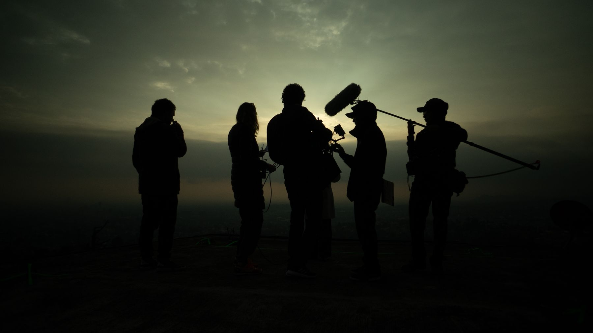
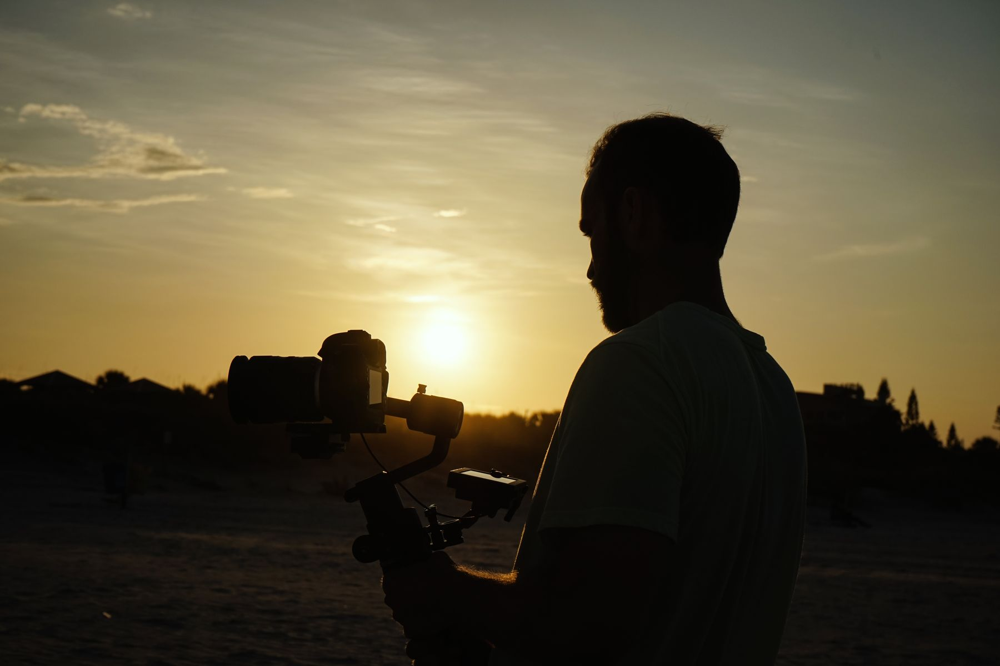
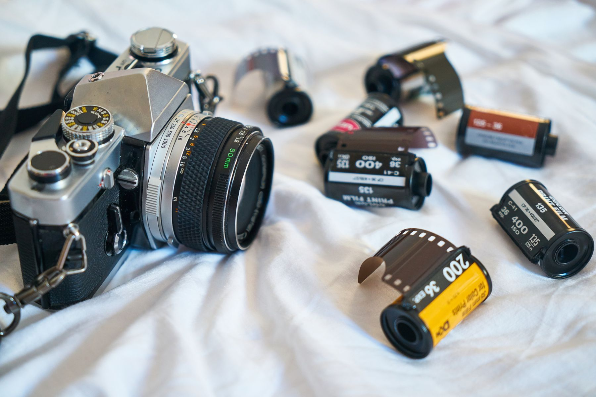

Craft / Journal
What the Light
Is Really Doing.
Every film is lit twice. Once by the sun, and once by a decision.
Written by the Envizon camera team
Cinematography · On-set craft · Colour · Process
Light decides
before the lens does.
Long before anyone calls "action," the light on a location has already made its argument — what time this scene lives in, how safe or exposed a character feels, whether a room is a home or a warning. Direction just listens to it.

One beam.
A hundred meanings.
Move a single light three feet and a commercial turns into a confession. We spend more time arguing about where light falls than almost anything else on a call sheet — because everything downstream, the performance, the colour, the cut, is reacting to a choice made hours before any of it.
Six moments.
One visual language.




Field notes, not theory
Shot on
Every commercial, brand film and documentary we make
- Written by
- Envizon camera team
- Studio
- Envizon Films
- Location
- Hyderabad / India
Keep reading.

Have a story
worth making?
Bring us the brief, the half-formed thought or the problem that still needs its idea.
HELLO@ENVIZONFILMS.COM